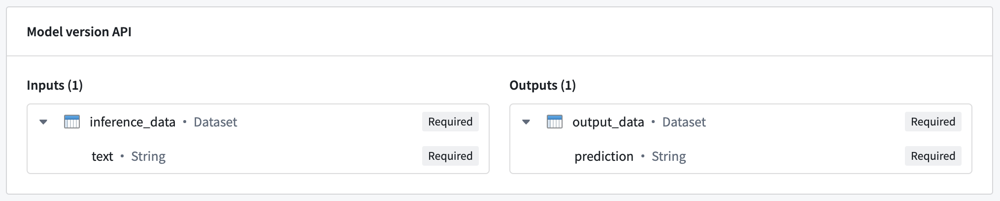
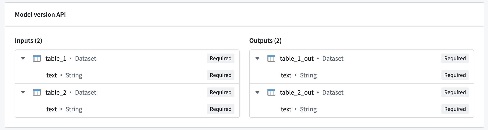

In both a direct model deployment and modeling objective, you can create a live deployment and host your model over an HTTP endpoint. You can test the hosted model from the Query tab of your live deployment by using the model in production through Functions on models, or by using the live deployment API directly.
To query the hosted model directly, choose from the following endpoint options:
/v2 and are also known as "v2 endpoints".:::callout{theme="warning"} The single I/O endpoint is deprecated and only supported in modeling objective deployments. :::
A multi I/O endpoint - sometimes referred to as a "v2 endpoint" - is a flexible endpoint that supports one or more inputs and one or more outputs.
<ENVIRONMENT_URL>/foundry-ml-live/api/inference/transform/ri.foundry-ml-live.<LIVE_DEPLOYMENT_RID>/v2<ENVIRONMENT_URL>: See section below for more information.POSTContent-Type: Must be "application/json".Authorization: Must be "Bearer <BEARER_TOKEN>", where <BEARER_TOKEN> is your authentication token.200 and a JSON object representing the inference response returned by the model. The shape of this object will reflect the API of the currently deployed model.For the following examples, we will use a model with a simple API of a single input and output.

The hosted model in this example expects a single input named inference_data, which is a dataset containing a text column. In this case, the expected request format would be the following:
{
"inference_data": [{
"text": "<Text goes here>"
}]
}
The model responds with a dataset named output_data, which contains a prediction column. This translates to the following response:
{
"output_data": [{
"prediction": "<Model prediction here>"
}]
}
curl --http2 -H "Content-Type: application/json" -H "Authorization: <BEARER_TOKEN>" -d '{ "inference_data": [ { "text": "Hello, how are you?" } ] }' --request POST <ENVIRONMENT_URL>/foundry-ml-live/api/inference/transform/ri.foundry-ml-live.<LIVE_DEPLOYMENT_RID>/v2
import requests
url = '<ENVIRONMENT_URL>/foundry-ml-live/api/inference/transform/ri.foundry-ml-live.<LIVE_DEPLOYMENT_RID>/v2'
inference_request = { 'inference_data': [ { 'text': 'Hello, how are you?' } ] }
response = requests.post(
url,
json=inference_request,
headers={ 'Content-Type': 'application/json', 'Authorization': 'Bearer <BEARER_TOKEN>' })
if response.ok:
modelResult = response.json()
print(modelResult)
else:
print("An error occurred")
// Construct request
const inferenceRequest = {
"inference_data": [{
"text": "Hello, how are you?"
}]
};
// Send the request
const response = await fetch(
"<ENVIRONMENT_URL>/foundry-ml-live/api/inference/transform/ri.foundry-ml-live.<RID>/v2",
{
method: "POST",
headers: {
"Content-Type": "application/json",
Authorization:
"Bearer <BEARER_TOKEN>",
},
body: JSON.stringify(inferenceRequest),
}
);
if (!response.ok) {
throw Error(`${response.status}: ${response.statusText}`);
}
const result = await response.json();
console.log(result);
Multi I/O models can receive multiple inputs and return multiple outputs. The image below shows an example of a model with multiple inputs and outputs:

To query a multi I/O, use the same request format as shown in the previous examples, with the inference_request containing a named field for each input:
{
"table_1": [{ "text": "Text for table one" }],
"table_2": [{ "text": "Text for table two" }]
}
The model will also respond with an object containing a named field for each output:
{
"table_1_out": [{ "text": "Result for table one" }],
"table_2_out": [{ "text": "Result for table two" }],
}
:::callout{theme="warning"} Single I/O endpoints are no longer recommended for new implementations. Prefer the more flexible multi I/O endpoint described above. :::
<ENVIRONMENT_URL>/foundry-ml-live/api/inference/transform/ri.foundry-ml-live.<LIVE_DEPLOYMENT_RID><ENVIRONMENT_URL>: See section below for more information.POSTContent-Type: Must be "application/json".Authorization: Must be "Bearer <BEARER_TOKEN>", where <BEARER_TOKEN> is your authentication token.requestData: An array containing the information to be sent to the model. The expected shape of this depends on the API of the deployed model.200 and a JSON object containing the following fields:modelUuid: A string identifying the model.responseData: An array of objects, where each object represents the inference response of the model. The shape of these objects depends on the API of the deployed model.:::callout{theme="warning"} Single I/O endpoints are no longer recommended for new implementations. Prefer the more flexible multi I/O endpoint described above. :::
For the following examples, we will use a model with a simple API of a single input and output.
The hosted model in this example expects a single input named inference_data, which is a dataset containing a text column. In this case, the expected request format would be the following:
{
"requestData": [{ "text": "<Text goes here>" }],
"requestParams": {},
}
The model responds with a dataset named output_data, which contains a prediction column. This translates to the following response:
{
"modelUuid": "000-000-000",
"responseData": [{
"prediction": "<Model prediction here>"
}]
}
curl --http2 -H "Content-Type: application/json" -H "Authorization: <BEARER_TOKEN>" -d '{"requestData":[ { "text": "Hello, how are you?" } ], "requestParams":{}}' --request POST <ENVIRONMENT_URL>/foundry-ml-live/api/inference/transform/ri.foundry-ml-live.<RID>
import requests
# This v1 endpoint is being sunset and only works for single input
# and single output models. Prefer the more generic v2 endpoint.
url = '<ENVIRONMENT_URL>/foundry-ml-live/api/inference/transform/ri.foundry-ml-live.<RID>'
inference_request = {
'requestData': [{ 'text': 'Hello, how are you?' }],
'requestParams': {},
}
response = requests.post(
url,
json=inference_request,
headers={ 'Content-Type': 'application/json', 'Authorization': 'Bearer <BEARER_TOKEN>' })
if response.ok:
modelResult = response.json()['responseData']
print(modelResult)
else:
print("An error occurred")
// Construct request
const inferenceRequest = {
requestData: [{ text: "Hello, how are you?" }],
requestParams: {},
};
// Send the request.
// This v1 endpoint is being sunset and will only work for single input
// and single output models. You should use the v2 endpoint instead of v1.
const response = await fetch(
"<ENVIRONMENT_URL>/foundry-ml-live/api/inference/transform/ri.foundry-ml-live.<RID>",
{
method: "POST",
headers: {
"Content-Type": "application/json",
Authorization:
"Bearer <BEARER_TOKEN>",
},
body: JSON.stringify(inferenceRequest),
}
);
if (!response.ok) {
throw Error(`${response.status}: ${response.statusText}`);
}
const result = await response.json();
console.log(result.responseData);
In the examples shown above, the <ENVIRONMENT_URL> placeholder represents the URL of your environment. To retrieve your environment URL, copy the curl request from the Query tab of your deployment and extract the URL.
The most common HTTP error codes are detailed below: